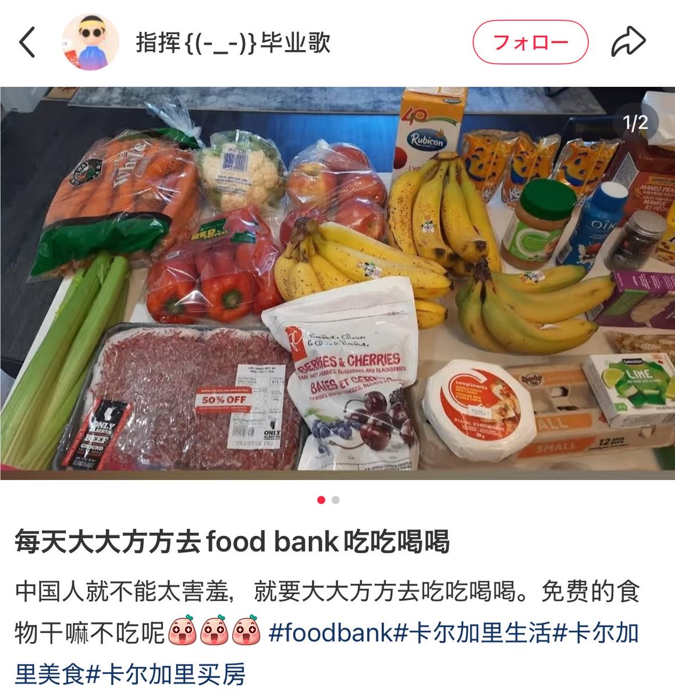
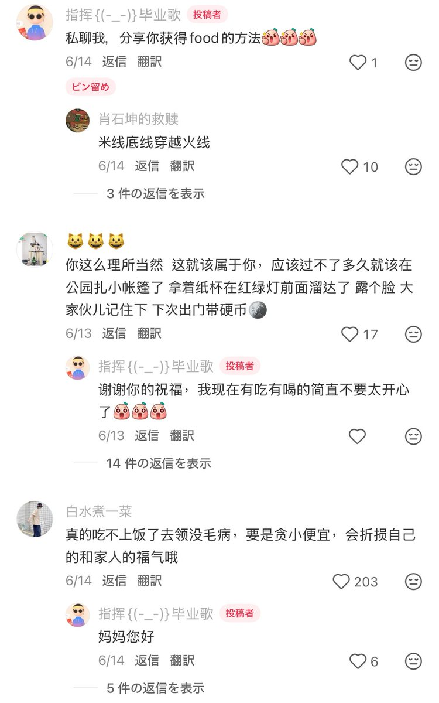

索瑟尔 𝓢𝓸𝓻𝓬𝓮𝓻𝓮𝓻🍥
@Sorcerer1311
当一个国家物资丰富到可以随便免费发放的时候
处在发展中的国家人民确实无法理解这种物质极大丰富


SUIFENG （風まかせに南へ）🇯🇵🇺🇸
@SUIFENGfreedom
一在加中国留学生在社交平台分秀出在食品银行领取的食物 并表示中国人不能太害羞 就是要大大方方去吃 甚至还要分享零食物的方法
有同在加拿大的留学生提醒他这些食物是给真正有困难的人准备的 他就对这些评论逐条进行嘲讽
如果这些食物成为了你们炫耀的资本 那么真正有困难的留学生该怎么办？ https://t.co/TtNSmdrYLU